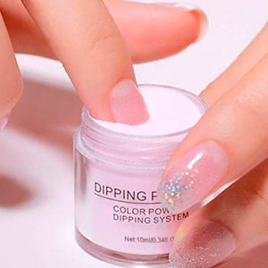

Dip powder
El Dip Powder es un sistema de esmaltado permanente en polvo,ha sido formulado sin químicos agresivos, libre de formaldehido, alcanfor o MMA, Non-Yellowing, no usan monómero, No requieren lámpara, no se adhieren a la piel y no poseen olor, es una alternativa mucho más saludable y menos invasiva.
contiene vitamina E y calcio, que nutren y fortalecen la cama de la uña, esto permite que, al aplicarse correctamente, se puedan recuperar uñas maltratadas o se fortalezcan las uñas naturales. Los manicures hechos con Dip Powder son livianos, resistentes, se sienten naturales y realizados de la forma correcta duran 21 días o más (dependiendo del cuidado) sin astillarse, ni levantarse, ni opacarse.puede ser aplicado en ambas manos en aproximadamente 20 minutos.